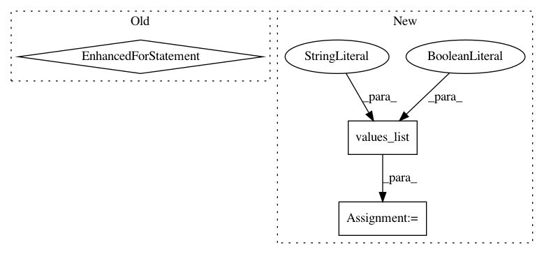

99d2d1aced54a9673b9e25b6c1f992acd20535e1,common/data_refinery_common/rna_seq.py,,get_quant_results_for_experiment,#Any#,74
Before Change
def get_quant_results_for_experiment(experiment: Experiment):
Returns a list of salmon quant results from `experiment`.
results = []
for sample in experiment.samples.all():
// TODO: this will break when we want to run for a new version.
result = sample.results\
.filter(processor__name=ProcessorEnum.SALMON_QUANT.value["name"])\
.order_by("-created_at")\
.first()
if result:
results.append(result)
return results
def get_quant_files_for_results(results: List[ComputationalResult]):
After Change
.order_by("-created_at")
// Annotate each sample in the experiment with the id of the most recent computational result
computational_results_ids = experiment.samples.all().annotate(
latest_computational_result_id=Subquery(newest_computational_results.values("id")[:1])
)\
.filter(latest_computational_result_id__isnull=False)\
.values_list("latest_computational_result_id", flat=True)
// return the computational results that match those ids
return ComputationalResult.objects.all().filter(
id__in=computational_results_ids
In pattern: SUPERPATTERN
Frequency: 3
Non-data size: 3
Instances
Project Name: AlexsLemonade/refinebio
Commit Name: 99d2d1aced54a9673b9e25b6c1f992acd20535e1
Time: 2019-08-16
Author: arielsvn@gmail.com
File Name: common/data_refinery_common/rna_seq.py
Class Name:
Method Name: get_quant_results_for_experiment
Project Name: AlexsLemonade/refinebio
Commit Name: 58244cbd1c25d116e1d19424d7c49ff28c5e41b8
Time: 2020-08-11
Author: willvauclain.dev@gmail.com
File Name: common/data_refinery_common/models/experiment.py
Class Name: Experiment
Method Name: get_sample_metadata_fields
Project Name: MTG/freesound
Commit Name: 69f305ec87e4f216380216bbf79badba8ce0b90e
Time: 2019-02-20
Author: frederic.font@upf.edu
File Name: search/management/commands/reindex_solr.py
Class Name: Command
Method Name: handle